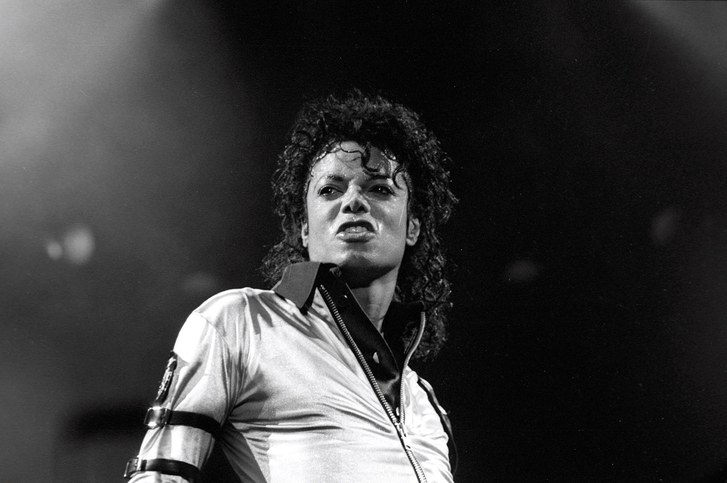

Michael Joseph Jackson (August 29, 1958 – June 25, 2009), the “King of Pop” was an American singer, songwriter, and dancer. He was a global figure in pop culture for over four decades as for his contributions towards music, dance and fashion.
He was born in Gary, Indiana on August 29, 1958 as the eighth of ten children in the Jackson family. He had a music background from his family as his mother Catherine Jackson was a Piano performer while his father Joe Jackson, also played the guitar for the band ‘Black and Blues’. Michael grew up with three sisters and five brothers in their two-bedroom house on Jackson street. It was publicly stated by Jackson that he was physically and emotionally abused by his father regularly and that he had a lonely and isolating childhood. 
In 1964, making of the band Jackson brothers (Jackson 5 later) was the incident that made him debut as a musician. With the won of a reality talent show in 1965 their fame was irresistible, and they have performed in several shows. In 1970, Jackson emerged as a solo performer by releasing his first four solo albums. Even so, the fifth solo album, Off the wall (1979) was the one that helped him to get established as a solo performer and he won three American music awards and a Grammy award for this. Jackson released his sixth album, Thriller in 1982 and was able to win seven awards in 26th Grammy awards, eight awards at the 11th Annual American Music Awards while becoming the youngest artist to receive the Award of Merit. Through all these Jackson hit the peak of the pop world and once the New York Times wrote “in the world of pop music, there is Michael Jackson and there is everybody else.”
In November 1983, Jackson and his brothers partnered with PepsiCo in a $5 million promotional deal that broke records for a celebrity endorsement. Jackson also had advertising deals with companies such as LA Gear, Suzuki, Sony etc. In 1984 he gave his support for several campaigns on alcohol and drug abuse prevention and won awards for the charity work. In 1983 Jackson in collaboration with Paul McCartney started buying publishing rights to other’s songs and in 1985 Jackson purchased 50-million-dollar worth ATV music publishing catalog comprising of publishing rights to nearly 4000 songs.
He was able maintain a very successful music and business carrier until the later years of his life.
Even if he was a very popular artist his personal life was not so successful. He had been acquitted for several cases of child abuse for two times in 1993 and 2003 but denied those allegations and proven not guilty.
He got married to Lisa Marley Presley, daughter of Elvis Presley in 1993 but the marriage ended less than two years. In 1996, he married Debbie Rowe who was a dermatology nurse who helped him when he was diagnosed and treated for vitiligo. He had two children from that marriage namely, Michael Joseph Jackson Jr.(1997) and Paris-Michael Katherine Jackson (1998) Jackson and Rowe divorced in 1999, and Rowe conceded custody of the children, with an $8 million settlement. In 2004, after the second child abuse allegations against him, she returned to court to reclaim custody. And was was settled in 2006.
On June 25 2009, Jackson died from sudden cardiac arrest while he resided in his rented mansion in Los Angeles. However, it has been revealed later that the death was due to Propofol overdose and that news was a catastrophe to his numerous fans all over the world. After a series of investigations Los Angeles county corner ruled that Jackson’s death was a homicide done by his physician, Conrad Murray and he was charged for involuntary manslaughter on 2010.